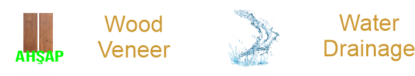
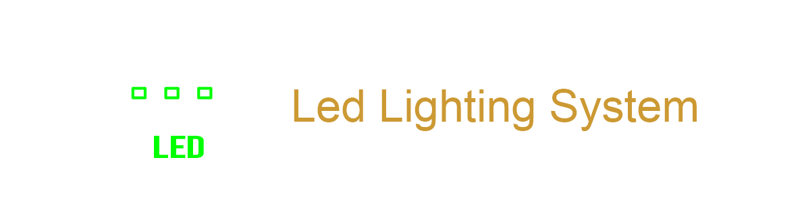
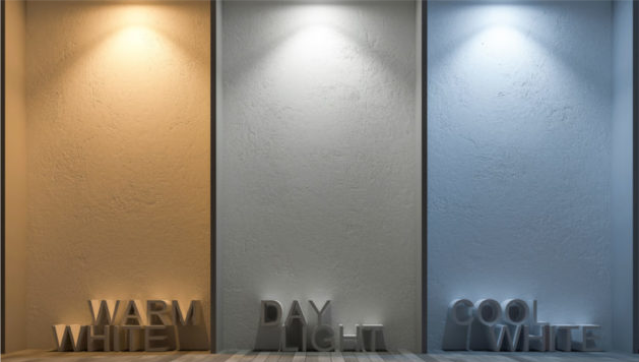
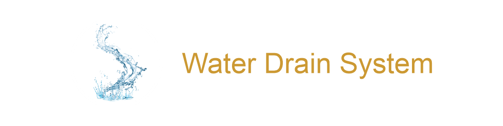

Home Page
Products
Guillotine
Pergola
Bioclimatic
Windbreaker
Zip Blinds
Wintend
Glass Ceiling
Sliding Glass
Folding Door
Panoramic
Lighting
Color
Water Drainage
Contact Us
Main
Products
Bioclimatic
Pergola
Guillotine
Windbreaker
Zip Blinds
Wintend
Glass Ceilling
Sliding Glass
Folding Door
Panoramic
Lighting
Color
Water Drainage
Contract Us
Bioclimatic (Rollingroof/Bioclimatic)
Doruk Bioclimatic Systems makes living spaces such as hotels, cafes, restaurants, residences, terraces, winter/summer gardens, shopping centers more comfortable and indispensable with its advanced technology and folding-collecting feature. It is possible to assemble with guillotine, zip curtain and sliding glass systems.
System Features
- Natural shading system with Rolling Roof system (collecting/folding)
- Air conditioning with natural circulation system of air
- Four seasons living space
- Water drainage system
- Daylight and LED lighting system
- Remote control
- Unlimited color (RAL Code) options
- Assembly with guillotine, zip curtain, sliding glass and folding glazing

DESIGN AND FUNCTIONALITY
- The panels, which are used as ceiling closing materials in the bioclimatic system, rotate around their own axis and perform the folding movement. After completing the folding motion, the aluminum panels are folded back to create a full open ceiling area. With the folding movement of the panels, it does not lose its shading feature while ventilating from the roof.
- Snow/rain water collected on aluminum panels is transferred to the main arc profile with the arc on the panels. Rain water is discharged from the main arc profile to the outside.
- In rainy weather, the panels are adjusted at a certain angle and designed to prevent water ingress while providing ventilation of the living space.
- The insulation feature can be increased to higher levels by filling the panel with polyurethane foam (optional).
- The bioclimatic system engine using RTS technology works with a remote control and the motion can be stopped at any point thanks to the start-stop technology. The entire system or a single module can be operated with a remote control.
- Rain and wind sensors that can be added to the system detect situations such as precipitation and storms when the system is on and turn off automatically.

- Led lighting options are prepared in accordance with your order..
- The lighting system is mounted inside the bioclimatic system in accordance with European standards..

All accessories and fasteners used in the system are made of stainless material.
Color OPTIONS
- Aluminum and metal parts are painted with static paint in accordance with your order.
-The color chart is determined by the RAL code system. Orders are created with the RAL code system.

- Rain/snow water discharge with drainage system integrated into the beam and column
- Waterproof system